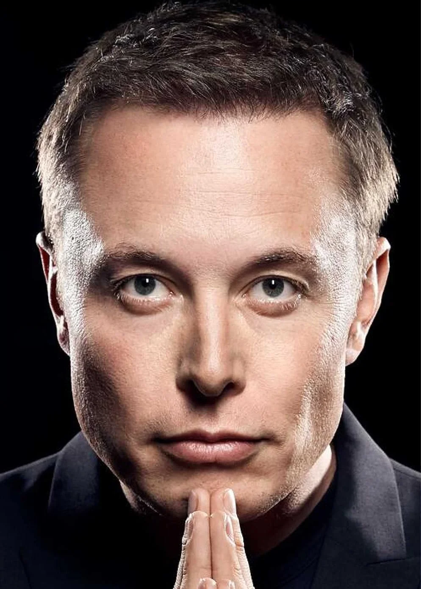

Сьогодні приватні компанії змінюють правила гри, роблячи космос доступним завдяки багаторазовим технологіям.
Якби літаки викидали після кожного польоту, квиток коштував би мільйони. SpaceX змінила це, навчивши ракети сідати назад на Землю.
Супутникові сузір'я Starlink забезпечують швидкісний доступ до мережі навіть у найвіддаленіших точках нашої планети.
Програма Starship спрямована на створення самодостатнього міста на Марсі вже до середини цього століття.

"Я думаю, що це важливо — мати майбутнє, яке надихає та захоплює. Потрібні причини, щоб прокидатися вранці та хотіти жити. Чому ви хочете жити? У чому сенс? Що вас надихає?"
— Ілон Маск, засновник SpaceX